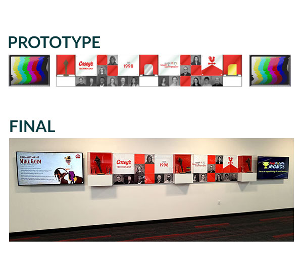

<section id="wingsContainer">
<div class="row">
<div class="column_half left_half"> 
  
  <!-- The Target Display Container -->
  <div class="targetContainer" style="margin-top: 15px; padding: 10px; border-radius: 8px;"> 
    
    <!-- Image Element (Hidden by default) --> 
     
    
    <!-- Video Element (Hidden by default) -->
    <video class="targetVideo" controls style="display: none; max-width: 100%; height: auto; max-height: 400px; border-radius: 4px; margin: auto;"> Your browser does not support the video tag. </video>
    
    <!-- The Buttons (Use your local relative file paths here) -->
	  <div class="row text-center">
     <button onclick="displayMedia('_images/recowall-layout.jpg', this)"></button>
	<button onclick="displayMedia('_images/recowall-video.mp4', this)"></button>
  
		  </div>
  </div>
  </div>
  <div class="column_half right_half">
    <h2>Recognition Wall&nbsp;</h2>
    <p class="text-center"> <span class="badge">Video</span> <span class="badge">Graphic design</span> <span class="badge">Environmental</span></p>
    <p>Problem: How might we recognize technology team members for the great work they do?</p>
    <p>Solution: Showcase the good works, awards, and </p>
<p>In this case, the solution was to build a RAG chatbot fed with the documents that team members need most. </p>
  </div>
</div>
</section>
